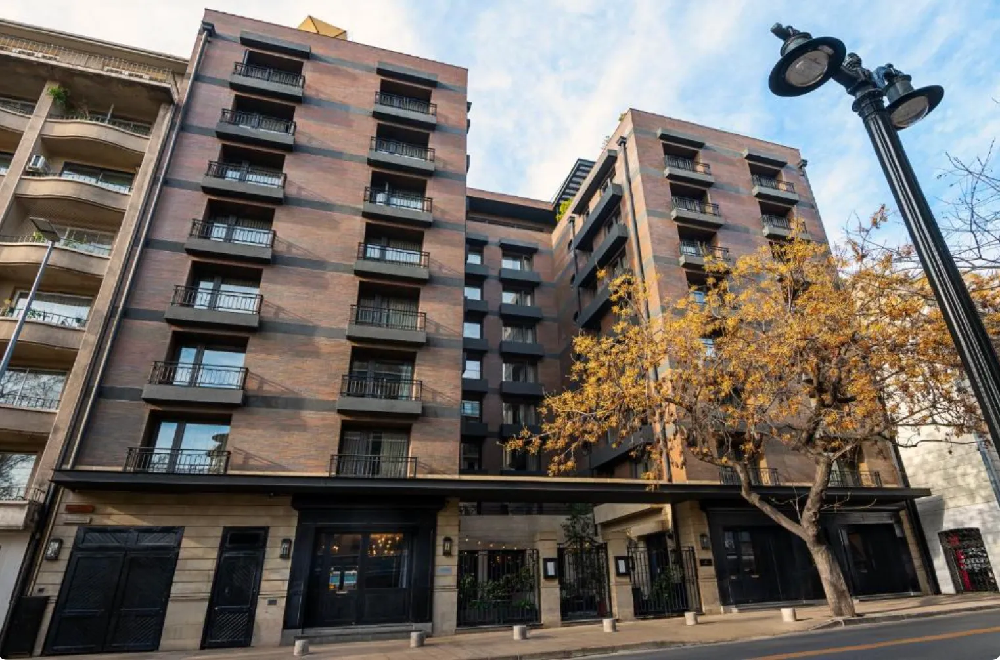
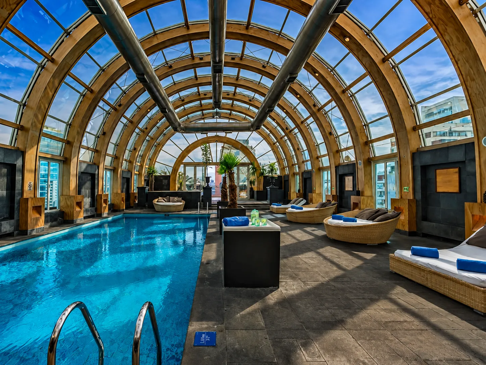
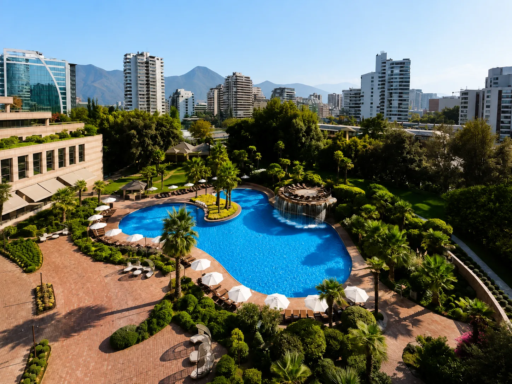
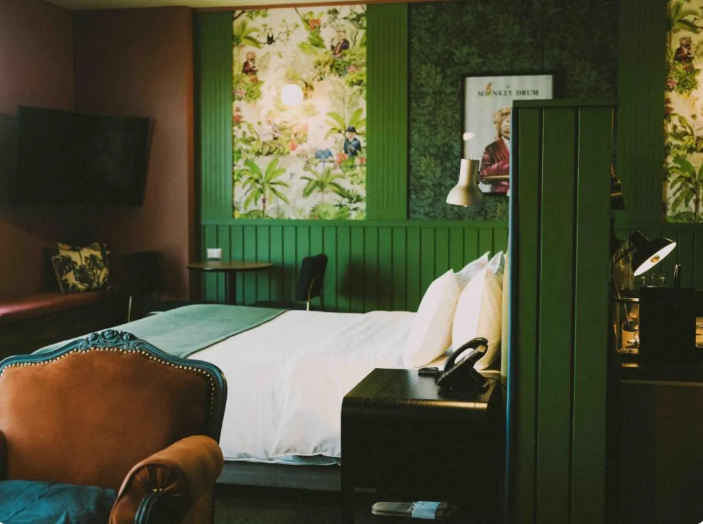
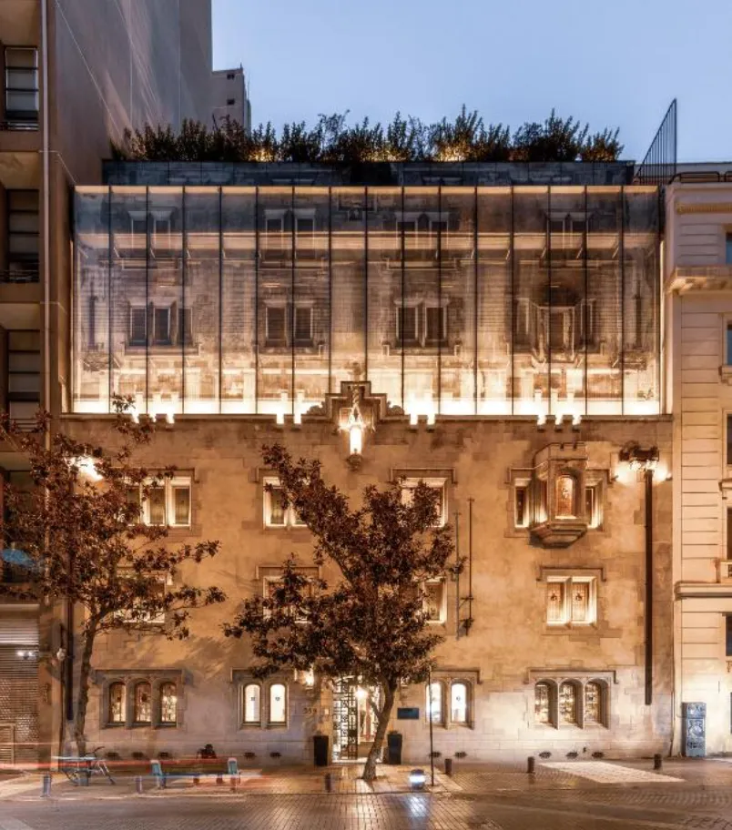

Providencia 适合第一次到访；Lastarria 偏文化与步行；El Golf 兼顾高端与地铁；Las Condes 设施完整；Vitacura 强调餐饮与生活方式；历史中心靠近城市地标且选择更多。
除了区域，旅行方式也会改变选择：预算、高端、家庭、情侣、泳池休闲与无障碍需求都需要不同的筛选条件。把这份精选作为第一步，并在付款前确认具体房型设施。

第一次到访的平衡选择
有城市天际线泳池，也有便利的 Providencia 位置，适合地铁、餐厅与日常出行。
实用而稳定
适合偏好熟悉国际品牌，同时希望住在 Providencia 高效率区域的旅客。

精品 + 文化
适合希望步行体验 Lastarria、Parque Forestal 与文化区域的旅客。


现代 + 实用
适合购物、商务与需要稳定住宿体验的旅客。


这里不固定显示价格或评分，因为会随日期和平台变化。重点是位置、旅行方式与酒店定位。
区域与酒店必须一起考虑，因此这份精选会先看位置、交通与旅行方式，再缩小到具体酒店。
部分链接可能为 Lipe Travel Show 带来佣金，但不会改变旅客支付的价格。